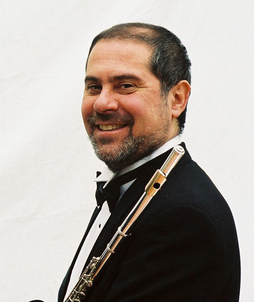

Saúl Martin (flauta) y Victor Villadangos (guitarra) afianzaron su amistad personal y musical desde 1980, año en que cursaban la materia “Música de cámara” en el Conservatorio “Juan José Castro” bajo la dirección del maestro Pedro Chiambaretta. Conservatorio del cual egresaron y se desempeñaron como profesores titulares durante 30 años de flauta y guitarra respectivamente.
Integrantes

Saúl Martín
Flautista, Profesor Superior de Flauta, Diplomado en Interpretación de Música Contemporánea. Profesor de Flauta y Música de Cámara.